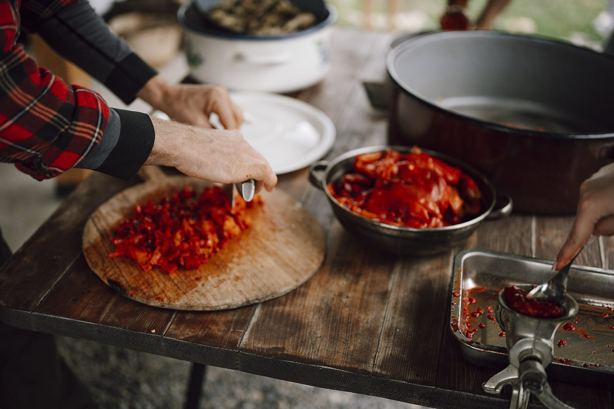
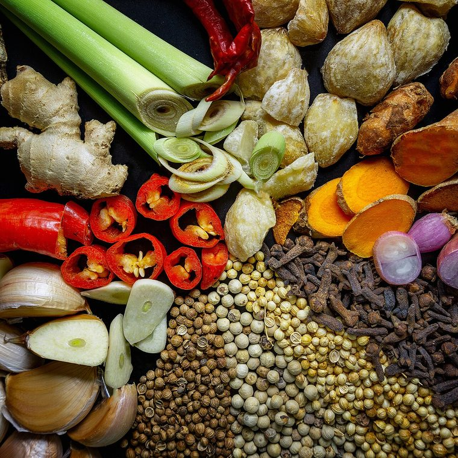
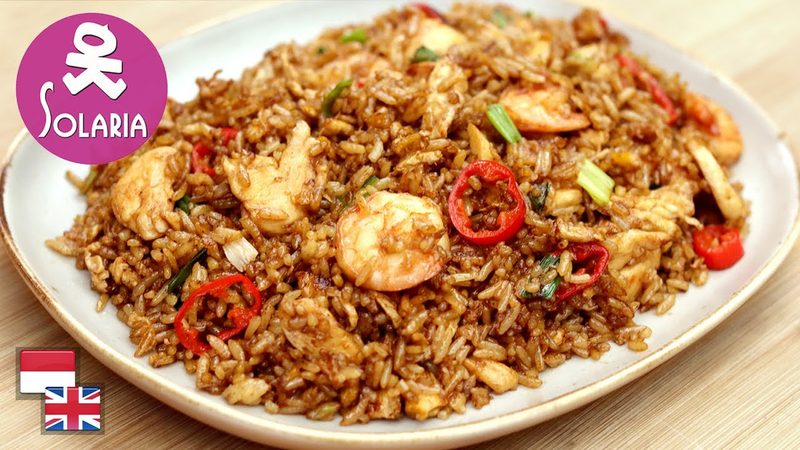
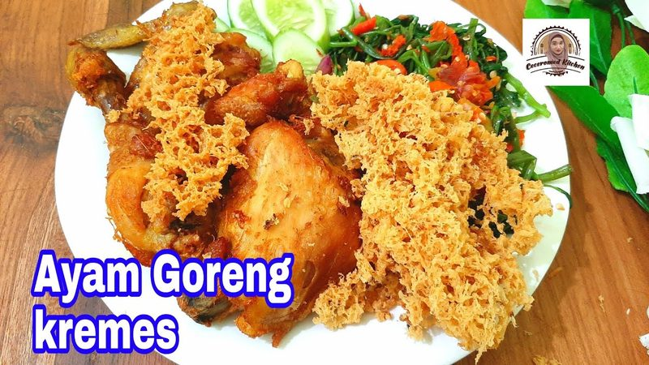
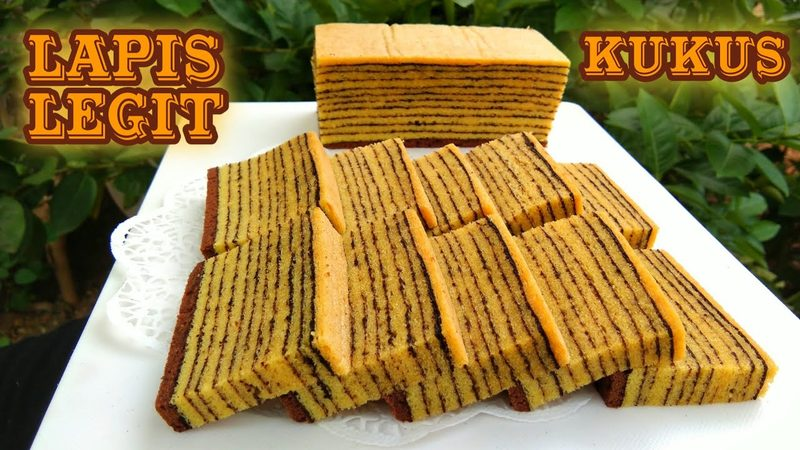
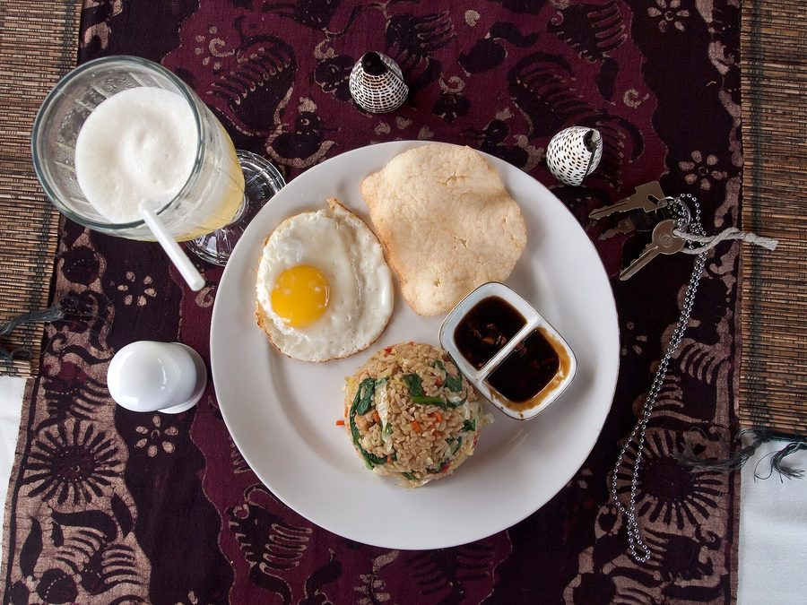
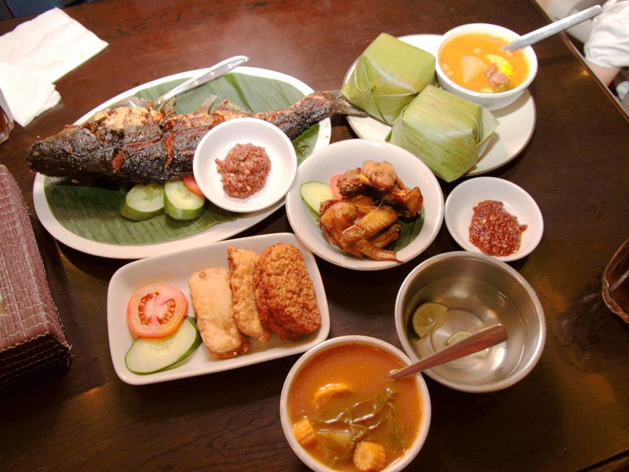
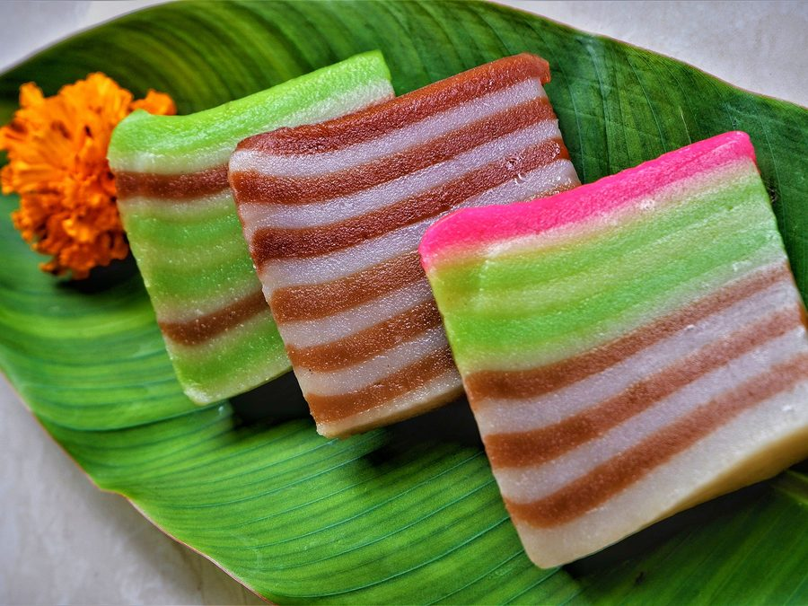

Benar-benar dari nol
Mulai dari cara memegang pisau, mengukur api, sampai kenapa tumisan sering berair. Tidak ada pertanyaan yang dianggap terlalu dasar di sini.
Belajar masak pelan-pelan bareng Bu Rina, dari cara memegang pisau sampai masakan yang bikin keluarga nambah. Pakai bumbu warung dan wajan yang sudah ada di rumah — tidak perlu beli alat apa pun.


Tiga hal yang selalu dijaga Bu Rina di setiap batch, sejak kelas pertama tahun 2019.
Mulai dari cara memegang pisau, mengukur api, sampai kenapa tumisan sering berair. Tidak ada pertanyaan yang dianggap terlalu dasar di sini.
Semua resep pakai bumbu yang ada di warung dekat rumah dan wajan biasa. Tidak ada satu pun alat yang harus kamu beli dulu.
Rekaman kelas bisa diulang kapan saja, dan foto masakanmu dikoreksi langsung oleh Bu Rina di grup WhatsApp murid.
Tiga video yang biasa dipakai murid baru untuk latihan sebelum kelas dimulai. Tonton satu, lalu bandingkan dengan menu kelas di bawah.

8:40
11:43
9:37Klik untuk memutar langsung di halaman ini, tanpa pindah tab. Ketiga video milik kanal masing-masing, dipakai sementara sebagai contoh.
Setiap kelas berjalan 2 sesi per minggu, malam hari, supaya tetap muat di sela pekerjaan dan urusan rumah.


Paling diminati
Belum yakin pilih yang mana? Chat saja dulu — Bu Rina biasa bantu memilihkan sesuai isi kulkasmu.
Atau lihat dulu 12 menu favorit orang Indonesia untuk cari inspirasi.
Kutipan dari grup alumni, ditulis ulang dengan izin pemiliknya.
Geser ke samping untuk cerita lainnya →
Kalau pertanyaanmu belum ada di sini, chat saja — dijawab langsung oleh Bu Rina, bukan robot.
Justru itu yang paling ditunggu. Sesi pertama isinya hal paling dasar: cara memegang pisau, mengenali besar api, dan urutan memasukkan bumbu. Sekitar tujuh dari sepuluh murid tiap batch belum pernah masak sama sekali sebelumnya.
Live lewat Zoom, dua sesi per minggu di malam hari, jadi masih muat setelah jam kerja. Semua sesi tetap direkam dan link rekamannya dikirim maksimal sehari setelah kelas — bisa diulang kapan pun tanpa batas waktu.
Cukup wajan atau panci yang sudah ada di rumah, satu pisau, dan talenan. Tidak ada alat khusus yang harus dibeli. Daftar bahan tiap sesi dikirim dua hari sebelumnya, dan belanjanya dirancang di kisaran Rp30.000 sekali masak.
Tinggal tonton rekamannya, lalu kirim foto hasil masakanmu ke grup untuk dikoreksi seperti biasa. Kalau ketinggalan lebih dari dua sesi, kamu boleh mengulang sesi itu di batch berikutnya tanpa bayar lagi.
Transfer bank atau e-wallet, sekali bayar untuk seluruh kelas. Tidak ada biaya bulanan dan tidak ada tagihan otomatis. Konfirmasi pembayaran dan link Zoom-nya diurus lewat WhatsApp.
Ikuti dulu sesi pertama. Kalau setelah itu kamu merasa kelasnya tidak cocok, chat Bu Rina dan uangnya dikembalikan penuh — tanpa perlu menjelaskan panjang lebar.
Ada pertanyaan lain? Tanya langsung lewat WhatsApp
Satu batch hanya 20 orang supaya masakan setiap murid sempat dikoreksi satu per satu. Chat sekarang untuk mengunci kursimu.
Daftar Kelas SekarangDibalas rata-rata di bawah 10 menit, setiap hari 08.00–21.00 WIB.